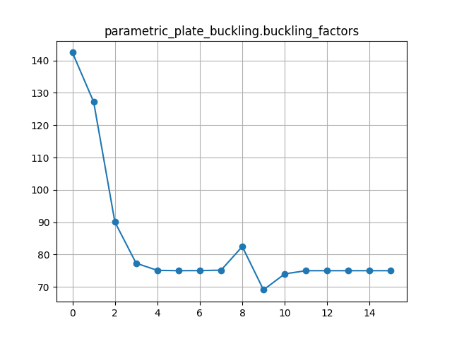
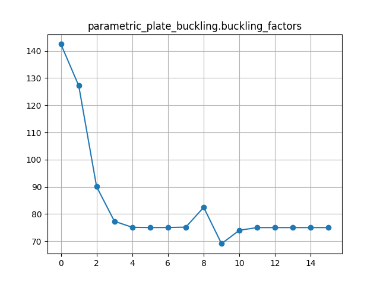

Example of a variable stiffness plate in compression
Contents
Example of a variable stiffness plate in compression#
Duration: 60 min
We optimise the design of a variable stiffness RTS composite plate in compression. We use CalculiX to model the plate and analyse the buckling behaviour, and OpenMDAO to minimise the mass of the plate, subject to a minimum buckling load constraint.
This example is based on Reference 1 and results are compared to the reference data showing a good correlation.
>> The files for this tutorial are now on Github.
{kind=link}
Model overview#
Variable stiffness RTS composites#
With steered-fibre composites (also called variable-stiffness composites), engineers have the option to change the fibre directions within each ply, as well as stacking plies with different fibre orientations through the laminate thickness.
The use of steered-fibre composites opens-up the design space and has been shown to lead to lighter, more efficient designs in a number of applications, for example, by steering fibres around holes or cut-outs in complex parts [2]. By steering the fibres, the number of stacked plies and their surface area can be optimised for structural efficiency, which leads to lighter designs. The use of fewer plies and the increased control over ply shapes has another benefit: it could speed-up the manufacturing process and reduce material wastage.
Rapid tow shearing (RTS) is a new patented manufacturing method for steered-fibre composites that is being developed by iCOMAT (icomat.co.uk). One of the main benefits of RTS is that the fibres can be steered to a tight radius (50mm), without generating fibre wrinkling, gaps or overlaps, which are defects that can significantly compromise the structural performance. This is a key advantage compared to other steering methods, such as ATL, AFP or TFP.
With RTS the thickness of the ply changes as a function of the steering angle (or more precisely “shearing”-angle) as shown in the figure below. This means that thickened laminate regions can be introduced purely by locally shearing the fibres, potentially removing the need to add plies near joints or other high stress areas.
{kind=link}
Modelling approach in Calculix#
Our objective is to optimise an RTS composite plate design for minimum mass, subject to a minimum buckling load constraint and to compare our results with data from Reference 1. We reduce the size of the optimisation problem compared to Reference 1 by using a fixed composite ply stacking sequence and only optimising the outer RTS ply steering angles.
We create a parametric Calculix finite element model of the plate to perform a linear eigenvalue buckling analysis. This type of analysis can be used to estimate the critical (bifurcation) loads of “stiff” structures.
Modelling the boundary conditions#
The rectangular plate (250x750mm) described in the reference is simply supported on all edges and loaded in the x-direction as shown below. In the reference, the analytical boundary conditions are applied directly at the laminate neutral plane, the location of which is a function of the laminate properties. There is normally no requirement for element nodes to coincide with the laminate neutral plane. Therefore, it may be difficult to reproduce these boundary conditions in a finite element model - particularly with shell elements. Instead we will be using a 5x larger model (750mmx1250mm) and boundary conditions shown in the second figure. This allows us to model boundary conditions on the 250x750mm inner plate that closely resemble simply supported conditions.
Note
For a constant stiffness panel, we could have reduced the size of the model by assuming symmetric boundary conditions in the x and y directions. However, the plate’s stiffness distributions here are not necessarily symmetric depending on the control point locations and fibre angle values.
{kind=link}
{kind=link}
Modelling the applied compression load#
The compression load (750kN) shown in the second figure is the target load below which the panel should not buckle. The compression load is applied to the model via a kinematic coupling (using the *KINEMATIC keyword), which distributes the load to the edge nodes and ensures that the edge remains straight. A second kinematic coupling is applied to the top edge of the plate to keep it straight, whilst allowing nodes to slide in the x and y directions.
Warning
We actually apply a lower load (10kN) to the model in Calculix Crunchix and constraint the minimum buckling factor to 75.0 in the OpenMDAO driver parameters. This ensures that the compression load applied to the model is always lower than the expected buckling load factor during the design optimisation iterations, without which the solver may return erroneous buckling load factors. We also request the first 10 buckling modes as an output with the *BUCKLE keyword, to ensure that the lowest mode is calculated with sufficient accuracy.
Defining the design variables#
The design variables for the RTS panel are the outer ply shearing angles T0 and T1, which are defined at 7 equally spaced control points in the 90 degree ply reference direction (model y-direction) as shown in the next figure. The location of the control points is also a variable in the component parameters, but we will not change these positions in this example.
For example, by defining angles of 0 and 69 degrees at T0 and T1 respectively, we can now model the fibre paths shown below in green and orange for the +/- RTS plies. Note that the plate lower surface is flat, so that the thickness variation shown below due to the fibre shearing is only visible on the upper surface.
{kind=link}

{kind=link}
Choosing the element type#
We choose to model the plate directly with solid C3D20R elements, as the alternative of using S8R shell elements with varying thicknesses in CalculiX would introduce undesired rigid body constraints at element interfaces [3]. To reduce the number of elements through the thickness of the plate, we also choose to calculate homogenised material properties for +/- plies, so that the optimal 28-ply RTS laminate design \([(90 \pm \langle 0|69 \rangle)_4 / 90 \pm \langle 0|67 \rangle / \pm 80 / 90_2]_s\) from Reference 1 can be approximated with only 3 element layers consisting of the following sub-laminates: \([(90 \pm \langle 0|69 \rangle)_5]\), \([90_8]\) and \([(90 \pm \langle 0|69 \rangle)_5]\).
Automating the design optimisation#
Load a workflow from file#
Copy the JSON object below into a text editor and save it locally, then select Open to load it.
Two components should appear in the workspace.
Since the second component is a driver we do not define any connections between components in this workflow.
dapta_input.json
{
"components": [
{
"name": "parametric-plate-buckling",
"api": "calculix-fea-comp:latest",
"options": {},
"parameters": {
"length_x": 1.250,
"width_y": 0.75,
"split_at_x": [
0.25,
1.0
],
"split_at_y": [
0.25,
0.5
],
"boundary_conditions": {
"fixed_y0": {
"lines": [
0,
1,
2
],
"SPC": "23"
},
"fixed_x0": {
"lines": [
9,
10,
11
],
"SPC": "13"
},
"support_z": {
"lines": [
12,
13,
14,
15,
16,
17,
18,
19,
20,
21,
22,
23
],
"SPC": "3"
},
"support_ymax": {
"lines": [
6,
7,
8
],
"kinematic": "23",
"ref_node_SPC": "346",
"surface_vector": [
0.0,
1.0,
0.0
]
},
"loaded_xmax": {
"lines": [
3,
4,
5
],
"kinematic": "13",
"ref_node_SPC": "356",
"surface_vector": [
1.0,
0.0,
0.0
],
"ref_node_forces": [
-10000.0,
0.0,
0.0
]
}
},
"edge_length": 0.025,
"material": {
"E1": 163.0e9,
"E2": 12.0e9,
"nu12": 0.3,
"G12": 5.0e9,
"thickness": 0.000125,
"density": 1571.0,
"tape_width": 0.100,
"stress_allowables": {},
"name": "IM7_8552",
"description": " Units are: kg, m; data from Groh_2015."
},
"plies": [
{
"path_start": [
0,
0,
0
],
"path_end": [
0,
0.750,
0
],
"ply_ref_angle": 90.0,
"ply_ref_thickness_multiplier": 10,
"combine_plus_minus_plies": true,
"control_pts": [
{
"d": -0.01,
"inc_angle": 69.0,
"id": "T1"
},
{
"d": 0.000,
"inc_angle": 69.0,
"id": "T1"
},
{
"d": 0.125,
"inc_angle": 0.0,
"id": "T0"
},
{
"d": 0.250,
"inc_angle": 69.0,
"id": "T1"
},
{
"d": 0.375,
"inc_angle": 0.0,
"id": "T0"
},
{
"d": 0.500,
"inc_angle": 69.0,
"id": "T1"
},
{
"d": 0.625,
"inc_angle": 0.0,
"id": "T0"
},
{
"d": 0.750,
"inc_angle": 69.0,
"id": "T1"
},
{
"d": 0.760,
"inc_angle": 69.0,
"id": "T1"
}
]
},
{
"path_start": [
0,
0,
0
],
"path_end": [
0,
0.750,
0
],
"ply_ref_angle": 90.0,
"ply_ref_thickness_multiplier": 8,
"combine_plus_minus_plies": true,
"control_pts": [
{
"d": -0.01,
"inc_angle": 0.0
},
{
"d": 0.760,
"inc_angle": 0.0
}
]
},
{
"path_start": [
0,
0,
0
],
"path_end": [
0,
0.750,
0
],
"ply_ref_angle": 90.0,
"ply_ref_thickness_multiplier": 10,
"combine_plus_minus_plies": true,
"control_pts": [
{
"d": -0.01,
"inc_angle": 69.0,
"id": "T1"
},
{
"d": 0.000,
"inc_angle": 69.0,
"id": "T1"
},
{
"d": 0.125,
"inc_angle": 0.0,
"id": "T0"
},
{
"d": 0.250,
"inc_angle": 69.0,
"id": "T1"
},
{
"d": 0.375,
"inc_angle": 0.0,
"id": "T0"
},
{
"d": 0.500,
"inc_angle": 69.0,
"id": "T1"
},
{
"d": 0.625,
"inc_angle": 0.0,
"id": "T0"
},
{
"d": 0.750,
"inc_angle": 69.0,
"id": "T1"
},
{
"d": 0.760,
"inc_angle": 69.0,
"id": "T1"
}
]
}
],
"mesh_files": {
"mesh": "all.msh",
"solid_mesh": "solid_mesh.inp",
"materials": "materials.inp",
"element_sets": "element_sets.inp",
"solid_sections": "solid_sections.inp",
"node_sets": "node_sets.inp",
"surfaces": "surfaces.inp",
"constraints": "constraints.inp",
"loads": "loads.inp"
},
"analysis_file": "ccx_compression_buckle.inp",
"number_of_modes": 10
},
"inputs": {
"T0": 70.0,
"T1": 70.0
},
"outputs": {
"mass": 0.0,
"buckling_factors": [
0.0
]
}
},
{
"name": "open-mdao",
"api": "generic-python3-driver:latest",
"options": {},
"parameters": {
"user_input_files": [],
"optimizer": "SLSQP",
"max_iter": 20,
"tol": 1e-6,
"disp": true,
"debug_print": [
"desvars",
"ln_cons",
"nl_cons",
"objs",
"totals"
],
"approx_totals": true,
"fd_step": 0.2,
"input_variables": [
{
"component": "parametric-plate-buckling",
"name": "T0",
"lower": 0,
"upper": 75,
"value": 0
},
{
"component": "parametric-plate-buckling",
"name": "T1",
"lower": 0,
"upper": 75,
"value": 0
}
],
"output_variables": [
{
"component": "parametric-plate-buckling",
"type": "objective",
"name": "mass",
"value": 0
},
{
"component": "parametric-plate-buckling",
"type": "constraint",
"name": "buckling_factors",
"value": [
0
],
"lower": 0.95
}
],
"driver": {
"type": "optimisation"
},
"visualise": [
"n2_diagram",
"plot_history"
]
}
}
],
"connections": [],
"workflow": {
"start": "parametric-plate-buckling",
"end": "parametric-plate-buckling",
"driver": "open-mdao"
}
}
The question marks next to the component names indicate that they are missing some data.
To fully define them, we need to upload all the components’ setup.py, compute.py, requirements.txt and user input files, as described in the next sections.
Update the plate component#
The parametric plate component performs 3 main tasks:
It creates a set of analysis input files from the component parameters and design variable inputs;
It executes a CalculiX CrunchiX finite element analysis;
It then reads the analysis outputs and returns the model mass and buckling load factors as component outputs.
To achieve the first task, we first use CalculiX GraphiX to create the plate 2D geometry and mesh this using second order S8 elements. This 2D mesh is then used to extrude solid elements for each composite ply. The extrusion thickness at each node is calculated from the local RTS shearing angle, which is linearly interpolated from the two closest control point values (determined by projecting the node onto the line of control points).
Note that this analysis workflow could be generalised by splitting it up into 3 components, one for each task.
To update the parametric plate component:
Select the component in the workspace to edit it.
Copy the contents of the
setup.py,compute.py,requirements.txtfiles from below into a text editor, save them locally. Then upload them under thePropertiestab.Copy the contents of the
ccx_compression_buckle.inpfile from below into a text editor and save it locally. Then upload it under theParameterstab by selectingupload user input files. The other parameters, inputs and outputs should have been pre-populated by loading the session file in the previous section.Select
Save datato save and close the component.
from datetime import datetime
from pathlib import Path
def setup(
inputs: dict = {"design": {}, "implicit": {}, "setup": {}},
outputs: dict = {"design": {}, "implicit": {}, "setup": {}},
parameters: dict = {
"user_input_files": [],
"inputs_folder_path": "",
"outputs_folder_path": "",
},
) -> dict:
"""Editable setup function."""
message = f"{datetime.now().strftime('%Y%m%d-%H%M%S')}: Setup completed."
return {"message": message}
""" Create a 3D element mesh for the RTS panel buckling analysis. """
from shutil import copy2
from datetime import datetime
from pathlib import Path
from math import sqrt, floor, ceil, cos, sin, radians, log10
import numpy as np
import itertools
import time
from functools import wraps
from contextlib import redirect_stdout
from calculix import execute_cgx, execute_fea
PARAMS = {
"length_x": 1.250,
"width_y": 0.75,
"split_at_x": [0.25, 1.0],
"split_at_y": [0.25, 0.5],
"boundary_conditions": {
"fixed_y0": {"lines": [0, 1, 2], "SPC": "23"},
"fixed_x0": {"lines": [9, 10, 11], "SPC": "13"},
"support_z": {
"lines": range(12, 24),
"SPC": "3",
},
"support_ymax": {
"lines": [6, 7, 8],
"kinematic": "23",
"ref_node_SPC": "346",
"surface_vector": [0.0, 1.0, 0.0],
},
"loaded_xmax": {
"lines": [3, 4, 5],
"kinematic": "13",
"ref_node_SPC": "356",
"surface_vector": [1.0, 0.0, 0.0],
"ref_node_forces": [-10000.0, 0.0, 0.0],
},
},
"edge_length": 0.025,
"material": {
"E1": 163.0e9,
"E2": 12.0e9,
"nu12": 0.3,
"G12": 5.0e9,
"thickness": 0.000125,
"density": 1571.0,
"tape_width": 0.100,
"stress_allowables": {},
"name": "IM7_8552",
"description": " Units are: kg, m; data from Groh_2015.",
},
"plies": [
{
"combine_plus_minus_plies": True,
"control_pts": [
{"d": -0.01, "id": "T1", "inc_angle": 69},
{"d": 0, "id": "T1", "inc_angle": 69},
{"d": 0.125, "id": "T0", "inc_angle": 0},
{"d": 0.25, "id": "T1", "inc_angle": 69},
{"d": 0.375, "id": "T0", "inc_angle": 0},
{"d": 0.5, "id": "T1", "inc_angle": 69},
{"d": 0.625, "id": "T0", "inc_angle": 0},
{"d": 0.75, "id": "T1", "inc_angle": 69},
{"d": 0.76, "id": "T1", "inc_angle": 69},
],
"path_end": [0, 0.75, 0],
"path_start": [0, 0, 0],
"ply_ref_angle": 90,
"ply_ref_thickness_multiplier": 10,
},
{
"combine_plus_minus_plies": True,
"control_pts": [{"d": -0.01, "inc_angle": 0}, {"d": 0.76, "inc_angle": 0}],
"path_end": [0, 0.75, 0],
"path_start": [0, 0, 0],
"ply_ref_angle": 90,
"ply_ref_thickness_multiplier": 8,
},
{
"combine_plus_minus_plies": True,
"control_pts": [
{"d": -0.01, "id": "T1", "inc_angle": 69},
{"d": 0, "id": "T1", "inc_angle": 69},
{"d": 0.125, "id": "T0", "inc_angle": 0},
{"d": 0.25, "id": "T1", "inc_angle": 69},
{"d": 0.375, "id": "T0", "inc_angle": 0},
{"d": 0.5, "id": "T1", "inc_angle": 69},
{"d": 0.625, "id": "T0", "inc_angle": 0},
{"d": 0.75, "id": "T1", "inc_angle": 69},
{"d": 0.76, "id": "T1", "inc_angle": 69},
],
"path_end": [0, 0.75, 0],
"path_start": [0, 0, 0],
"ply_ref_angle": 90,
"ply_ref_thickness_multiplier": 10,
},
],
"mesh_files": {
"mesh": "all.msh",
"solid_mesh": "solid_mesh.inp",
"materials": "materials.inp",
"element_sets": "element_sets.inp",
"solid_sections": "solid_sections.inp",
"node_sets": "node_sets.inp",
"surfaces": "surfaces.inp",
"constraints": "constraints.inp",
"loads": "loads.inp",
},
"analysis_file": "ccx_compression_buckle.inp",
"number_of_modes": 10,
"user_input_files": [],
"inputs_folder_path": Path(__file__).parent,
"outputs_folder_path": Path(__file__).parent / "outputs",
}
def timeit(func):
@wraps(func)
def wrapper_timer(*args, **kwargs):
tic = time.perf_counter()
value = func(*args, **kwargs)
toc = time.perf_counter()
elapsed_time = toc - tic
print(
f"Elapsed time for function '{func.__name__}': {elapsed_time:0.4f} seconds"
)
return value
return wrapper_timer
def compute(
inputs: dict = {"design": {}, "implicit": {}, "setup": {}},
outputs: dict = {"design": {}, "implicit": {}, "setup": {}},
partials: dict = {},
options: dict = {},
parameters: dict = {
"user_input_files": [],
"inputs_folder_path": "",
"outputs_folder_path": "",
},
) -> dict:
"""Editable compute function."""
run_folder = Path(parameters["outputs_folder_path"])
with open(run_folder / "run.log", "w", encoding="utf-8") as f:
with redirect_stdout(f):
resp = main(
inputs=inputs,
outputs=outputs,
partials=partials,
options=options,
parameters=parameters,
)
return resp
def main(
inputs: dict = {"design": {}, "implicit": {}, "setup": {}},
outputs: dict = {"design": {}, "implicit": {}, "setup": {}},
partials: dict = {},
options: dict = {},
parameters: dict = {
"user_input_files": [],
"inputs_folder_path": "",
"outputs_folder_path": "",
},
):
inputs_folder = Path(parameters["inputs_folder_path"])
if not (inputs_folder / parameters["analysis_file"]).is_file():
raise FileNotFoundError(
f"{parameters['analysis_file']} needs to be uploaded by the user."
)
print("Starting user function evaluation.")
run_folder = Path(parameters["outputs_folder_path"])
# set design variables
if inputs["design"]:
update_parameters_with_inputs(parameters, inputs)
print("Applied design inputs.")
# 1) Define a 2D mould surfaces in CGX and generate the 2D mesh
cgx_input_file = get_geometry(
length_x=parameters["length_x"],
width_y=parameters["width_y"],
split_at_x=parameters["split_at_x"],
split_at_y=parameters["split_at_y"],
boundary_conditions=parameters["boundary_conditions"],
edge_length=parameters["edge_length"],
run_folder=run_folder,
)
resp = execute_cgx(infile=cgx_input_file.name, run_folder=run_folder)
with open(run_folder / "cgx.log", "w", encoding="utf-8") as f:
f.write(resp["stdout"])
if not resp["returncode"] == 0:
raise ChildProcessError(
f'cgx returned non-zero exit status {resp["returncode"]}'
)
# read the 2D mesh from CGX output file
elements, nodes, constraints = get_2Dmesh(
mesh_files=parameters["mesh_files"],
run_folder=run_folder,
bcs=parameters["boundary_conditions"],
)
# 2) Calculate the element normals, and then the node normal
corner_nodes = set()
set_element_normals(elements=elements, nodes=nodes, corner_nodes=corner_nodes)
set_node_normals(nodes=nodes, elements=elements)
# 3) Offset the 2D mesh nodes by local thickness distribution for each laminate substack
nid_offset = 10 ** ceil(log10(max(nodes.keys())))
eid_offset = 10 ** ceil(log10(max(elements.keys())))
materials = {}
element_sets = {}
set_name_format = "P{:d}_A{:.3f}"
for plyid, ply in enumerate(parameters["plies"]):
# define functions to interpolate rts ply local properties
f_inc_angle, f_thickness, upath = get_rts_distributions(
ply, ref_thickness=parameters["material"]["thickness"]
)
offset_nodes(
plyid,
nodes,
constraints,
f_inc_angle,
f_thickness,
upath,
set_of_corner_nodes=corner_nodes,
start=np.array(ply["path_start"]),
nid_offset=nid_offset,
)
# 4) create 3D elements from 2D mesh and offset nodes
offset_elements(
plyid,
elements,
element_sets,
constraints,
f_inc_angle,
f_thickness,
upath,
start=np.array(ply["path_start"]),
eid_offset=eid_offset,
nid_offset=nid_offset,
nodes=nodes,
)
# 5) calculate the local material properties for each group of elements from the reference angle and shearing angles
set_materials(
plyid,
materials,
list(element_sets[plyid].keys()),
ply,
parameters["material"],
nformat=set_name_format,
)
# calculate reference node positions for the kinematic constraints
update_kinematic_constraints_ref_nodes(
constraints, nodes, offset=nid_offset * (len(parameters["plies"]) * 2 + 1)
)
# calculate the plate mass from elements
volume = get_volume(elements)
mass = volume * parameters["material"]["density"]
# 6) output the mesh to file
fname = parameters["mesh_files"]
write_solid_mesh(nodes, elements, run_folder=run_folder, file=fname["solid_mesh"])
write_materials(materials, run_folder=run_folder, file=fname["materials"])
write_element_sets(
element_sets, set_name_format, run_folder=run_folder, file=fname["element_sets"]
)
write_solid_sections(
materials, set_name_format, run_folder=run_folder, file=fname["solid_sections"]
)
write_node_sets(constraints, run_folder=run_folder, file=fname["node_sets"])
write_surface(constraints, run_folder=run_folder, file=fname["surfaces"])
write_constraints(constraints, run_folder=run_folder, file=fname["constraints"])
write_loading(constraints, run_folder=run_folder, file=fname["loads"])
print("Created CCX solid mesh files.")
# 7) Perform ccx FEM analysis
infile = copy2(
inputs_folder / parameters["analysis_file"],
run_folder / parameters["analysis_file"],
)
resp = execute_fea(infile.stem, run_folder=run_folder)
with open(run_folder / "ccx.log", "w", encoding="utf-8") as f:
f.write(resp["stdout"])
if not resp["returncode"] == 0:
raise ChildProcessError(
f'ccx returned non-zero exit status {resp["returncode"]}'
)
# check output has been saved
outfile = run_folder / (infile.stem + ".dat")
if not outfile.is_file():
raise FileNotFoundError(f"{str(outfile)} is not a file.")
print("Executed CCX FEM analysis.")
buckling_factors = get_buckling_factors(
outfile, number_modes=parameters["number_of_modes"]
)
outputs["design"]["mass"] = mass
outputs["design"]["buckling_factors"] = buckling_factors[0]
message = f"{datetime.now().strftime('%Y%m%d-%H%M%S')}: Executed Calculix finite element analysis."
print(message)
return {"message": message, "outputs": outputs}
@timeit
def update_parameters_with_inputs(parameters, inputs):
input_data = inputs["design"] # ["ply-ctrl_pt_id-inc_angle": value, ]
for key, value in input_data.items():
if not key in ["T0", "T1"]:
raise ValueError('Input key should be one of "T0", "T1"')
for ply in parameters["plies"]:
for pt in ply["control_pts"]:
if "id" in pt and pt["id"] == key:
pt["inc_angle"] = value
return None
@timeit
def get_geometry(
length_x,
width_y,
split_at_x,
split_at_y,
boundary_conditions,
edge_length,
fname="cgx_2d_mesh.fdb",
run_folder=None,
):
# corner points 1-4
points = [[0.0, 0.0], [length_x, 0.0], [length_x, width_y], [0.0, width_y]]
# side points
points.extend(
[
[split_at_x[0], 0.0],
[split_at_x[1], 0.0],
[length_x, split_at_y[0]],
[length_x, split_at_y[1]],
[split_at_x[1], width_y],
[split_at_x[0], width_y],
[0.0, split_at_y[1]],
[0.0, split_at_y[0]],
]
)
# mid-panel nodes
points.extend(
[
[split_at_x[0], split_at_y[0]],
[split_at_x[1], split_at_y[0]],
[split_at_x[1], split_at_y[1]],
[split_at_x[0], split_at_y[1]],
]
)
# all at z = 0
[p.append(0.0) for p in points]
# Lines 0 to 11 are the outside bounds defined by point indices
lines = [
[0, 4], # 0
[4, 5],
[5, 1],
[1, 6],
[6, 7], # 4
[7, 2],
[2, 8],
[8, 9],
[9, 3], # 8
[3, 10],
[10, 11],
[11, 0],
]
# split lines 12 to 23 defined by point indices
lines.extend(
[
[4, 12], # 12
[5, 13],
[6, 13],
[7, 14],
[8, 14], # 16
[9, 15],
[10, 15],
[11, 12],
[12, 13], # 20
[13, 14],
[14, 15],
[15, 12],
]
)
# add number of elements per edge
def nele(pt1, pt2, edge):
p1 = points[pt1]
p2 = points[pt2]
l = sqrt((p2[0] - p1[0]) ** 2 + (p2[1] - p1[1]) ** 2 + (p2[2] - p1[2]) ** 2)
return floor(l / edge)
[line.append(nele(line[0], line[1], edge_length)) for line in lines]
# surfaces defined by line indices (negative for direction reversal)
surfaces = [
[0, 12, -19, 11],
[1, 13, -20, -12],
[2, 3, 14, -13],
[4, 15, -21, -14],
[5, 6, 16, -15],
[7, 17, -22, -16],
[8, 9, 18, -17],
[10, 19, -23, -18],
[20, 21, 22, 23],
]
commands = get_commands(points, lines, surfaces, boundary_conditions)
# write string of commands to file
with open(run_folder / fname, "w", encoding="utf-8") as f:
f.write("".join(commands))
cgx_input_file = run_folder / fname
return cgx_input_file
def divide_chunks(l, n):
if not isinstance(l, list):
l = list(l)
# looping till length l
for i in range(0, len(l), n):
yield l[i : i + n]
@timeit
def get_commands(
points,
lines,
surfaces,
boundary_conditions,
max_entries_per_line=9,
cgx_ele_type=10, # s8 elements
nele_multiplier=2, # for s8 elements
merge_tol=0.001,
solver="abq",
):
"""create string of all cgx input commands"""
commands = []
# points
for entity_id, point in enumerate(points):
commands.append(
f"PNT P{entity_id:05d} {point[0]:e} {point[1]:e} {point[2]:e}\n"
)
commands.append("# =============== \n")
# lines
for entity_id, line in enumerate(lines):
if len(line) == 3: # straight line
commands.append(
f"LINE L{entity_id:05d} P{line[0]:05d} P{line[1]:05d} {line[2]*nele_multiplier:d} \n"
)
commands.append("# =============== \n")
# surfaces
for entity_id, surf in enumerate(surfaces):
commands.append(
f"GSUR V{entity_id:05d} + BLEND "
+ " ".join(
[f"+ L{line:05d}" if line >= 0 else f"- L{-line:05d}" for line in surf]
)
+ "\n"
)
commands.append("# =============== \n")
# SPC and load sets
for name, bc in boundary_conditions.items():
for chunk in divide_chunks(bc["lines"], max_entries_per_line):
commands.append(
f"SETA {name.upper()} l "
+ " ".join([f"L{int(line):05d}" for line in chunk])
+ "\n"
)
commands.append("# =============== \n")
# surface meshes
for entity_id, _ in enumerate(surfaces):
commands.append(f"MSHP V{entity_id:05d} s {cgx_ele_type:d} 0 1.000000e+00\n")
commands.append("# =============== \n")
# custom export statement
commands.append("mesh all\n")
commands.append(f"merg n all {merge_tol:6f} 'nolock'\n")
commands.append("comp nodes d\n")
for name, bc in boundary_conditions.items():
commands.append(f"comp {name.upper()} d\n")
# commands.append(f"send {name.upper()} {solver} spc {bc['SPC']}\n")
commands.append(f"send {name.upper()} {solver} names\n")
commands.append("# =============== \n")
commands.append(f"send all {solver} \n")
commands.append("quit\n")
return commands
@timeit
def get_2Dmesh(mesh_files, run_folder, bcs):
elements, nodes = get_nodes_and_elements(run_folder, file=mesh_files["mesh"])
constraints = get_constraints(run_folder, bcs=bcs)
return elements, nodes, constraints
def get_nodes_and_elements(run_folder, file):
with open(run_folder / file, "r", encoding="utf-8") as f:
lines = f.readlines()
read_nodes = False
read_elements = False
ele_type = None
nodes = {}
elements = {}
for line in lines:
if line.startswith("*NODE"): # all nodes in one set assumed
print("start reading nodes.")
read_nodes = True
read_elements = False
ele_type = None
continue
elif line.startswith("*ELEMENT"): # all elements in one set assumed
print("start reading elements.")
read_nodes = False
read_elements = True
ele_type = {
data.split("=")[0].strip(): data.split("=")[1].strip()
for data in line.split(",")
if "=" in data
}["TYPE"]
continue
elif read_nodes:
data = line.split(",")
# parse nodes into { ID: {"global_xyz": [x,y,z]}}
nodes[int(data[0])] = {"global_xyz": [float(v) for v in data[1:]]}
elif read_elements:
data = line.split(",")
# parse elements into { ID: {"type": S8, "nodes": [1-8]}}
elements[int(data[0])] = {
"type": ele_type,
"nodes": [int(v) for v in data[1:]],
}
return elements, nodes
def get_constraints(run_folder, bcs):
all_constrained_nodes = set()
def get_constraint_starting_nodes(constraints):
for cname, constraint in constraints.items():
with open(
run_folder / (cname.upper() + ".nam"), "r", encoding="utf-8"
) as f:
lines = f.readlines()
read_nodes = False
for line in lines:
if line.startswith("*NSET"):
print(f"start reading node set {cname}.")
read_nodes = True
continue
elif read_nodes:
data = line.split(",")
if int(data[0]) not in all_constrained_nodes:
constraint["nodes"].add(int(data[0]))
all_constrained_nodes.add(int(data[0]))
else:
print(
f"Node {int(data[0])} is removed from constraint {cname.upper()} as it is already constrained."
)
constraints = {"SPCs": {}, "kinematic_MPCs": {}}
for cname, constraint in bcs.items():
if "SPC" in constraint:
ctype = "SPCs"
constraints[ctype][cname] = {"nodes": set(), **constraint}
elif "kinematic" in constraint:
ctype = "kinematic_MPCs"
constraints[ctype][cname] = {"nodes": set(), "faces": set(), **constraint}
# get constraints in order to avoid over-constraining nodes where constraints overlap
get_constraint_starting_nodes(
constraints["kinematic_MPCs"]
) # define face constraints first
get_constraint_starting_nodes(
constraints["SPCs"]
) # exclude nodes in face constraints
return constraints
@timeit
def set_element_normals(elements, nodes, corner_nodes):
for _, element in elements.items():
centroid = [0.0, 0.0, 0.0]
for nid in element["nodes"]:
xyz = nodes[nid]["global_xyz"]
centroid = [c1 + c2 for c1, c2 in zip(centroid, xyz)]
centroid = [c / len(element["nodes"]) for c in centroid]
element["global_xyz"] = centroid
## TODO for each element normal is the average of the normals calculated at the elemnent nodes from the element edges ( sum of vectors / nb nodes)
# (assume n = [0,0,1] for the flat panel)
element["normal"] = [0.0, 0.0, 1.0]
if element["type"] == "S8":
corner_nodes.update(element["nodes"][:4])
return None
@timeit
def set_node_normals(nodes, elements):
for nid in nodes:
## TODO for each node, find the connected elements and average normal at the node as sum of vectors / nb connected elements
# (assume n = [0,0,1] for the flat panel)
nodes[nid]["normal"] = [0.0, 0.0, 1.0]
return None
def piecewise_linear_angle_interp(x, ranges, ctrl_points):
f_angles = lambda x, a0, a1, d0, d1: (a1 - a0) / (d1 - d0) * (x - d0) + a0
for d, a in zip(ranges, ctrl_points):
if x >= d[0] and x < d[1]:
return f_angles(x, a[0], a[1], d[0], d[1])
raise ValueError(f"x value {x} is outside control point range.")
@timeit
def get_rts_distributions(ply, ref_thickness):
# get path unit vector
upath = np.array(ply["path_end"]) - np.array(ply["path_start"])
upath = upath / np.linalg.norm(upath)
# linear interpolation
ranges = []
ctrl_points = []
for p0, p1 in zip(ply["control_pts"][:-1], ply["control_pts"][1:]):
ranges.append((p0["d"], p1["d"]))
ctrl_points.append((p0["inc_angle"], p1["inc_angle"]))
# input to f_inc_angle is dot product of upath with vector from path start to node
f_inc_angle = {
"f": piecewise_linear_angle_interp,
"args": [ranges, ctrl_points],
}
f_thickness = (
lambda x: ply["ply_ref_thickness_multiplier"] * ref_thickness / cos(radians(x))
)
return f_inc_angle, f_thickness, upath
def project_to_point(xyz, start, upath, f_inc_angle, f_thickness):
vector2node = np.array(xyz) - start
projected_length = np.dot(upath, vector2node)
inc_angle = f_inc_angle["f"](projected_length, *f_inc_angle["args"])
thickness = f_thickness(inc_angle)
return {"inc_angle": inc_angle, "thickness": thickness}
def offset_point_by_vector(magnitude, vector, pt):
return [c + v * magnitude for v, c in zip(vector, pt)]
@timeit
def offset_nodes(
plyid,
nodes,
constraints,
f_inc_angle,
f_thickness,
upath,
set_of_corner_nodes,
start,
nid_offset,
):
## project the shearing angle and thickness values to the model nodes and centroids in a direction normal to upath
for nid, node in list(nodes.items()):
# filter nodes by ID - take only nodes at the bottom of the current layer
if nid > plyid * 2 * nid_offset and nid < (plyid * 2 + 1) * nid_offset:
props = project_to_point(
node["global_xyz"],
start,
upath,
f_inc_angle,
f_thickness,
)
thickness = props["thickness"]
# save offset nodes
new_nids = []
if nid - plyid * 2 * nid_offset in set_of_corner_nodes:
nodes[nid + nid_offset] = {
"normal": node["normal"],
"global_xyz": offset_point_by_vector(
thickness / 2, node["normal"], node["global_xyz"]
),
} # mid-height node
new_nids.append(nid + nid_offset)
nodes[nid + nid_offset * 2] = {
"normal": node["normal"],
"global_xyz": offset_point_by_vector(
thickness, node["normal"], node["global_xyz"]
),
} # top node
new_nids.append(nid + nid_offset * 2)
# update the spc constraint node sets
for cname, constraint in constraints["SPCs"].items():
if nid in constraint["nodes"]:
constraint["nodes"].update(new_nids)
return None
@timeit
def offset_elements(
plyid,
elements,
element_sets,
constraints,
f_inc_angle,
f_thickness,
upath,
start,
eid_offset,
nid_offset,
nodes,
):
# element faces from ccx manual for C3D20/ C3D20R elements
faces = {
"S1": [n - 1 for n in (1, 2, 3, 4)],
"S2": [n - 1 for n in (5, 8, 7, 6)],
"S3": [n - 1 for n in (1, 5, 6, 2)],
"S4": [n - 1 for n in (2, 6, 7, 3)],
"S5": [n - 1 for n in (3, 7, 8, 4)],
"S6": [n - 1 for n in (4, 8, 5, 1)],
}
## TODO check that the offset values at each node are small compared to the edge
# lengths of the connected elements (<1/5 edge?) to avoid badly shaped elements
## project the shearing angle and thickness values to the model nodes and centroids in a direction normal to upath
element_sets[plyid] = {}
for eid, element in list(elements.items()):
# filter 2D elements - reference for the property calculation
if element["type"] == "S8":
props = project_to_point(
element["global_xyz"],
start,
upath,
f_inc_angle,
f_thickness,
)
inc_angle = props["inc_angle"]
thickness = props["thickness"]
# save offset element
new_eid = eid + eid_offset * (plyid + 1)
nids = [
*[
n + nid_offset * 2 * plyid for n in element["nodes"][:4]
], # base corners
*[
n + nid_offset * 2 * (1 + plyid) for n in element["nodes"][:4]
], # top corners
*[
n + nid_offset * 2 * plyid for n in element["nodes"][4:]
], # base mid-side
*[
n + nid_offset * 2 * (1 + plyid) for n in element["nodes"][4:]
], # top mid-side
*[
n + nid_offset * (1 + 2 * plyid) for n in element["nodes"][:4]
], # mid-height nodes
]
volume = hexahedron_volume_from_nodes(nids[:8], nodes)
elements[new_eid] = {
"global_xyz": offset_point_by_vector(
thickness * (plyid + 1 / 2),
element["normal"],
element["global_xyz"],
),
"type": "C3D20R",
"inc_angle": inc_angle,
"t": thickness,
"nodes": nids,
"volume": volume,
}
# Create sets of elements by ply and common inc_angle.
if inc_angle in element_sets[plyid]:
element_sets[plyid][inc_angle].append(new_eid)
else:
element_sets[plyid][inc_angle] = [new_eid]
# update kinematic constraints if needed
update_kinematic_constraints(constraints, nids, faces, new_eid, nodes)
return None
def hexahedron_volume_from_nodes(nids, nodes):
n = lambda i: np.array(nodes[nids[i - 1]]["global_xyz"])
# sum the volume of the 5 tetrahedrons composing the hex
volume = 0.0
for tet in (
(n(1), n(2), n(4), n(5)),
(n(3), n(2), n(4), n(7)),
(n(5), n(6), n(7), n(2)),
(n(5), n(7), n(8), n(4)),
(n(2), n(4), n(7), n(5)),
):
volume += get_tetrahedron_volume(tet)
return volume
def get_tetrahedron_volume(tet):
if not all([isinstance(n, np.ndarray) for n in tet]) or not len(tet) == 4:
raise ValueError(
"input should be list of 4 np.array(xyz) coordinates of tet corners."
)
matrix = np.array(
[
tet[0] - tet[3],
tet[1] - tet[3],
tet[2] - tet[3],
]
)
return 1 / 6 * np.abs(np.linalg.det(matrix))
def update_kinematic_constraints(constraints, nids, faces, new_eid, nodes):
# update the kinematic constraint node sets and face=(element,faceID) sets
# NOTE:
# the function is exited after the first constraint on an element is found,
# this avoids over-constraining element nodes, which results in error messages
iterables = [constraints["kinematic_MPCs"].values(), faces.items()]
for constraint, (face, face_node_indices) in list(itertools.product(*iterables)):
face_nids = [nids[i] for i in face_node_indices]
if any([n in constraint["nodes"] for n in face_nids]):
face_nodes = [nodes[i] for i in face_nids]
face_vector = get_surface_normal_from_nodes(face_nodes)
if np.dot(
face_vector, np.array(constraint["surface_vector"])
) > 0.9 * np.linalg.norm(face_vector):
# update the face set
constraint["faces"].add((new_eid, face))
# update the node set
constraint["nodes"].update(face_nids)
return
def get_volume(elements):
volume = 0.0
for e in elements.values():
if e["type"] == "C3D20R":
volume += e["volume"]
return volume
@timeit
def update_kinematic_constraints_ref_nodes(constraints, nodes, offset):
nid = offset + 1
for constraint in constraints["kinematic_MPCs"].values():
face_nodes = [nodes[i] for i in constraint["nodes"]]
constraint["ref_node"] = {nid: {"global_xyz": get_mid_point(face_nodes)}}
nid += 1
def get_surface_normal_from_nodes(nodes: list) -> np.ndarray:
# assumes coplanar nodes on face by only using first 3 nodes
if not len(nodes) >= 3:
raise ValueError("Need at least 3 nodes to calculate surface normal vector.")
v01 = np.array(nodes[1]["global_xyz"]) - np.array(nodes[0]["global_xyz"])
v02 = np.array(nodes[2]["global_xyz"]) - np.array(nodes[0]["global_xyz"])
# TODO check angle between vectors is > 10 deg for more general meshes
return np.cross(v02, v01) # order so that the norm points out of the element
def get_mid_point(face_nodes):
# find the average xyz position from a set of nodes
mid_point = np.zeros(3)
for node in face_nodes:
mid_point += np.array(node["global_xyz"])
mid_point /= len(face_nodes)
return list(mid_point)
@timeit
def set_materials(plyid, materials, set_inc_angles, ply, ref_material, nformat):
# get composite ply Q matrix
q_matrix = get_Qmatrix(ref_material)
# calculate D from A/t, from the Q matrix and from the fibre angles
set_D_matrix(plyid, materials, q_matrix, ply, set_inc_angles, ref_material, nformat)
return None
def get_Qmatrix(material):
modulus_E1 = material["E1"]
modulus_E2 = material["E2"]
pr_nu12 = material["nu12"]
modulus_G12 = material["G12"]
pr_nu21 = pr_nu12 * modulus_E2 / modulus_E1
denominator = 1 - pr_nu12 * pr_nu21
q11 = modulus_E1 / denominator
q22 = modulus_E2 / denominator
q12 = pr_nu12 * modulus_E2 / denominator
q66 = modulus_G12
return np.array([[q11, q12, 0.0], [q12, q22, 0.0], [0.0, 0.0, q66]])
def rotate_q_matrix(angle, q):
s = lambda angle: sin(radians(angle))
c = lambda angle: cos(radians(angle))
T_mat = np.array(
[
[c(angle) ** 2, s(angle) ** 2, 2 * c(angle) * s(angle)],
[s(angle) ** 2, c(angle) ** 2, -2 * c(angle) * s(angle)],
[-c(angle) * s(angle), c(angle) * s(angle), c(angle) ** 2 - s(angle) ** 2],
]
)
R_mat = np.array(
[[1.0, 0.0, 0.0], [0.0, 1.0, 0.0], [0.0, 0.0, 2.0]]
) # Reuter matrix
# equation 2.82 from Mechanics of Composite materials
q_rotated = np.linalg.inv(T_mat) @ q @ R_mat @ T_mat @ np.linalg.inv(R_mat)
return q_rotated
def set_D_matrix(
plyid, materials, q_matrix, ply, set_inc_angles, ref_material, nformat
):
def is_pos_def(A):
if np.allclose(A, A.T, atol=1e-3):
try:
np.linalg.cholesky(A)
return True
except np.linalg.LinAlgError:
return False
else:
return False
# indices for upper triangular 6x6 matrix in column by column order
# (order for calculix anisotropic material elasticity inputs)
indices = [[], []]
rows_upper_triangular = 1
for col in range(6):
for row in range(rows_upper_triangular):
indices[0].append(row)
indices[1].append(col)
rows_upper_triangular += 1
materials[plyid] = {}
for inc_angle in set_inc_angles:
if ply["combine_plus_minus_plies"]:
rotations = [-inc_angle, inc_angle]
else:
rotations = [inc_angle]
# calculate A/t matrix
a_matrix_by_t = np.zeros([3, 3])
for r in rotations:
a_matrix_by_t += rotate_q_matrix(angle=r + ply["ply_ref_angle"], q=q_matrix)
a_matrix_by_t = a_matrix_by_t / len(rotations)
# derive the dimensionless D stiffness matrix in 3D, check that it is positive definite
d_matrix = np.zeros([6, 6])
d_matrix[:2, :2] = a_matrix_by_t[:2, :2]
d_matrix[:2, 3] = a_matrix_by_t[:2, 2]
d_matrix[3, :2] = a_matrix_by_t[2, :2]
d_matrix[3, 3] = a_matrix_by_t[2, 2]
d_matrix[2, 2] = ref_material["E2"]
d_matrix[4, 4] = ref_material["G12"]
d_matrix[5, 5] = ref_material["G12"]
if not is_pos_def(d_matrix):
raise ValueError("Calculated stiffness matrix is not positive definite.")
materials[plyid][inc_angle] = {
"name": nformat.format(plyid, inc_angle),
"D_matrix": d_matrix[tuple(indices)].tolist(),
"density": ref_material["density"],
}
return None
@timeit
def write_solid_mesh(nodes, elements, run_folder=None, file="solid_mesh.inp"):
lines = []
# nodes
lines.append("*NODE, NSET=Nall\n")
for nid, node in nodes.items():
lines.append("{:6d},{:e},{:e},{:e}\n".format(nid, *node["global_xyz"]))
# elements
lines.append("*ELEMENT, TYPE=C3D20R, ELSET=Eall\n")
format_C3D20R = "".join(["{:6d},"] * 16 + ["\n"] + ["{:6d},"] * 5)[:-1] + "\n"
for eid, element in elements.items():
if element["type"] == "C3D20R":
lines.append(format_C3D20R.format(eid, *element["nodes"]))
# write string of input lines to file
with open(run_folder / file, "w", encoding="utf-8") as f:
f.write("".join(lines))
return None
@timeit
def write_materials(materials, run_folder=None, file="materials.inp"):
lines = []
format_aniso = (
"".join(["{:e},"] * 8 + ["\n"] + ["{:e},"] * 8 + ["\n"] + ["{:e},"] * 5)[:-1]
+ "\n"
)
for ply in materials.values():
for material in ply.values():
lines.append(f"*MATERIAL,NAME={material['name']}\n")
lines.append(
"*ELASTIC, TYPE =ANISO\n" + format_aniso.format(*material["D_matrix"])
)
lines.append("*DENSITY\n{:e}\n".format(float(material["density"])))
# write string of input lines to file
with open(run_folder / file, "w", encoding="utf-8") as f:
f.write("".join(lines))
@timeit
def write_element_sets(
element_sets, set_name_format, run_folder=None, file="element_sets.inp"
):
lines = []
for plyid, plyset in element_sets.items():
for inc_angle, elset in plyset.items():
lines.append(
"*ELSET,ELSET=E" + set_name_format.format(plyid, inc_angle) + "\n"
)
for chunk in divide_chunks(elset, 16):
# note trailing comas are no a problem for ccx or abaqus
lines.append(", ".join([f"{int(eid):d}" for eid in chunk]) + ",\n")
# write string of input lines to file
with open(run_folder / file, "w", encoding="utf-8") as f:
f.write("".join(lines))
@timeit
def write_solid_sections(
materials, set_name_format, run_folder=None, file="solid_sections.inp"
):
lines = []
for plyid, ply in materials.items():
for inc_angle in ply.keys():
name = set_name_format.format(plyid, inc_angle)
lines.append("*SOLID SECTION,MATERIAL=" + name)
lines.append(",ELSET=E" + name + "\n")
# write string of input lines to file
with open(run_folder / file, "w", encoding="utf-8") as f:
f.write("".join(lines))
@timeit
def write_node_sets(constraints, run_folder=None, file="node_sets.inp"):
lines = []
for cname, constraint in constraints["SPCs"].items():
lines.append("*NSET,NSET=N" + cname.upper() + "\n")
for chunk in divide_chunks(constraint["nodes"], 16):
# note trailing comas are no a problem for ccx or abaqus
lines.append(", ".join([f"{int(eid):d}" for eid in chunk]) + ",\n")
# write string of input lines to file
with open(run_folder / file, "w", encoding="utf-8") as f:
f.write("".join(lines))
def write_surface(constraints, run_folder=None, file="surfaces.inp"):
lines = []
for cname, constraint in constraints["kinematic_MPCs"].items():
lines.append("*SURFACE, NAME=S" + cname.upper() + "\n")
for face in constraint["faces"]:
lines.append(f"{face[0]:6d},{face[1]}\n")
# write string of input lines to file
with open(run_folder / file, "w", encoding="utf-8") as f:
f.write("".join(lines))
def write_constraints(constraints, run_folder=None, file="constraints.inp"):
lines = []
# spc constraints
lines.append("*BOUNDARY\n")
for cname, constraint in constraints["SPCs"].items():
for dof in constraint["SPC"]:
lines.append(f"N{cname.upper()}, {dof}, ,\n") # NSET, DOF
# kinematic constraints
for cname, constraint in constraints["kinematic_MPCs"].items():
nid = list(constraint["ref_node"].keys())[0]
lines.append(f"*NODE, NSET=N{cname.upper()}\n")
lines.append(
"{:6d},{:e},{:e},{:e}\n".format(
nid, *constraint["ref_node"][nid]["global_xyz"]
)
)
lines.append(
f"*COUPLING, REF NODE={nid}, SURFACE=S{cname.upper()}, CONSTRAINT NAME={cname.upper()}\n"
)
lines.append("*KINEMATIC\n")
for dof in constraint["kinematic"]:
lines.append(f"{dof}\n") # DOF
lines.append("*BOUNDARY\n")
for dof in constraint["ref_node_SPC"]:
lines.append(f"{nid:6d}, {dof}, ,\n")
# write string of input lines to file
with open(run_folder / file, "w", encoding="utf-8") as f:
f.write("".join(lines))
def write_loading(constraints, run_folder=None, file="loads.inp"):
lines = []
for constraint in constraints["kinematic_MPCs"].values():
if "ref_node_forces" in constraint:
lines.append("*CLOAD\n")
nid = list(constraint["ref_node"].keys())[0]
for dof, value in enumerate(constraint["ref_node_forces"]):
if not value == 0.0:
lines.append(f"{nid:6d}, {dof+1:d}, {value:e}\n")
# write string of input lines to file
with open(run_folder / file, "w", encoding="utf-8") as f:
f.write("".join(lines))
def get_buckling_factors(outfile, number_modes):
with open(outfile, "r", encoding="utf-8") as f:
data = f.readlines()
index = 1
factors = []
for line in data[6 : int(7 + number_modes)]:
output = line.strip().split()
mode_no = int(output[0])
factor = float(output[1])
if not mode_no == index:
raise ValueError(
"Mode number doesn't match expected index. Check dat file."
)
index += 1
factors.append(factor)
return factors
if __name__ == "__main__":
design = {}
outputs = {
"mass": 0.0,
"buckling_factors": [0.0],
}
resp = main(
inputs={"design": design, "implicit": {}, "setup": {}},
outputs={"design": outputs, "implicit": {}, "setup": {}},
partials={},
options={},
parameters=PARAMS,
)
# assert np.isclose(resp["outputs"]["mass"], 8.836875, rtol=1e-6)
# assert np.isclose(resp["outputs"]["buckling_factors"][0], 1.126453, rtol=1e-6)
numpy == 1.21.5
*HEADING
Model: Unsuported composite box normal modes
**********************
** NODES AND ELEMENTS
*INCLUDE,INPUT=solid_mesh.inp
**********************
** COMPOSITE PROPERTIES
*INCLUDE,INPUT=element_sets.inp
*INCLUDE,INPUT=materials.inp
*INCLUDE,INPUT=solid_sections.inp
**********************
** CONSTRAINTS
*INCLUDE,INPUT=node_sets.inp
*INCLUDE,INPUT=surfaces.inp
*INCLUDE,INPUT=constraints.inp
*STEP
*BUCKLE, SOLVER=SPOOLES
10
*INCLUDE,INPUT=loads.inp
*NODE OUTPUT
U
*ELEMENT OUTPUT
S
*END STEP
Update the driver component#
The driver component is identical to the OpenMDAO optimisation component used in the Simple optimisation problem example, except for the driver parameters, which have been adjusted for the plate optimisation problem:
The “input_variables” and “output_variables” parameters set the optimisation variables, objective and constraint functions.
The calculation of total derivatives across the chained components (using finite differencing) is requested by setting
"approx_totals": trueand"fd_step": 0.2in the driver parameters.Optimisation iteration history plots are requested by adding the “plot_history” option into the “visualise” parameter list.
To create the driver component:
Select the open-mdao component to edit it.
Copy the contents of the
setup.py,compute.py,requirements.txtfiles from below into a text editor, save them locally. Then upload them under thePropertiestab.Copy the contents of the
om_component.pyfile from below into a text editor and save it locally. Then upload it under theParameterstab by selectingupload user input files.Select
Save datato save and close the component.
from datetime import datetime
from pathlib import Path
def setup(
inputs: dict = {"design": {}, "implicit": {}, "setup": {}},
outputs: dict = {"design": {}, "implicit": {}, "setup": {}},
parameters: dict = {
"user_input_files": [],
"inputs_folder_path": "",
"outputs_folder_path": "",
},
) -> dict:
"""Editable setup function."""
if "driver" not in parameters:
# assume we want to run an optimisation with default settings
parameters["driver"] = {"type": "optimisation"}
message = f"{datetime.now().strftime('%Y%m%d-%H%M%S')}: Setup completed."
return {"message": message, "parameters": parameters}
from datetime import datetime
from pathlib import Path
import traceback
from contextlib import redirect_stdout
import numpy as np
import openmdao.api as om
from matplotlib import pyplot as plt # type: ignore
from component_api2 import call_compute
from om_component import OMexplicitComp # type: ignore
def compute(
inputs: dict = {"design": {}, "implicit": {}, "setup": {}},
outputs: dict = {"design": {}, "implicit": {}, "setup": {}},
partials: dict = {},
options: dict = {},
parameters: dict = {
"user_input_files": [],
"inputs_folder_path": "",
"outputs_folder_path": "",
},
) -> dict:
"""Editable compute function."""
print("OpenMDAO problem setup started.")
workflow = parameters["workflow"]
all_connections = parameters["all_connections"]
run_folder = Path(parameters["outputs_folder_path"])
# 1) define the simulation components
prob = om.Problem()
for component in workflow:
if "ExplicitComponents" in parameters:
kwargs = [
comp["kwargs"]
for comp in parameters["ExplicitComponents"]
if comp["name"] == component
][0]
else:
kwargs = {}
prob.model.add_subsystem(
reformat_compname(component),
OMexplicitComp(compname=component, run_number=0),
**kwargs,
)
if "ExecComps" in parameters and parameters["ExecComps"]:
for component in parameters["ExecComps"]:
prob.model.add_subsystem(
reformat_compname(component["name"]),
om.ExecComp(component["exprs"]),
**component["kwargs"],
)
# 2) define the component connections
for connection in all_connections:
if connection["type"] == "design":
prob.model.connect(
reformat_compname(connection["origin"])
+ "."
+ connection["name_origin"].replace(".", "-"),
reformat_compname(connection["target"])
+ "."
+ connection["name_target"].replace(".", "-"),
)
if parameters["driver"]["type"] == "optimisation":
# 3) setup the optimisation driver options
prob.driver = om.ScipyOptimizeDriver()
prob.driver.options["optimizer"] = parameters["optimizer"]
prob.driver.options["maxiter"] = parameters["max_iter"]
prob.driver.options["tol"] = parameters["tol"]
prob.driver.opt_settings["disp"] = parameters["disp"]
prob.driver.options["debug_print"] = parameters["debug_print"]
if "approx_totals" in parameters and parameters["approx_totals"]:
# ensure FD gradients are used
prob.model.approx_totals(
method="fd", step=parameters["fd_step"], form=None, step_calc=None
)
elif parameters["driver"]["type"] == "doe":
# 3) alternative: setup a design of experiments
prob.driver = om.DOEDriver(
om.UniformGenerator(num_samples=parameters["driver"]["samples"])
)
# 4) add design variables
for var in parameters["input_variables"]:
upper = var["upper"]
lower = var["lower"]
if "component" in var:
comp = reformat_compname(var["component"])
prob.model.add_design_var(
f"{comp}.{var['name'].replace('.', '-')}",
lower=lower,
upper=upper,
)
else:
prob.model.add_design_var(
var["name"].replace(".", "-"), lower=lower, upper=upper
)
prob.model.set_input_defaults(var["name"].replace(".", "-"), var["value"])
# 5) add an objective and constraints
for var in parameters["output_variables"]:
comp = reformat_compname(var["component"])
name = f"{comp}.{var['name'].replace('.', '-')}"
# set scaling from parameter input file
if "scaler" in var:
scaler = var["scaler"]
else:
scaler = None
if "adder" in [var]:
adder = var["adder"]
else:
adder = None
if var["type"] == "objective":
prob.model.add_objective(name, scaler=scaler, adder=adder)
elif var["type"] == "constraint":
if "lower" in var:
lower = var["lower"]
else:
lower = None
if "upper" in var:
upper = var["upper"]
else:
upper = None
prob.model.add_constraint(
name, lower=lower, upper=upper, scaler=scaler, adder=adder
)
prob.setup() # required to generate the n2 diagram
print("OpenMDAO problem setup completed.")
if "visualise" in parameters and "n2_diagram" in parameters["visualise"]:
# save n2 diagram in html format
om.n2(
prob,
outfile=str(run_folder / "n2.html"),
show_browser=False,
)
if parameters["driver"]["type"] == "optimisation":
dict_out = run_optimisation(prob, parameters, run_folder)
# elif parameters["driver"]["type"] == "check_partials":
# dict_out = run_check_partials(prob, parameters)
# elif parameters["driver"]["type"] == "check_totals":
# dict_out = run_check_totals(prob, parameters)
# elif parameters["driver"]["type"] == "doe":
# dict_out = run_doe(prob, parameters)
# elif parameters["driver"]["type"] == "post":
# dict_out = run_post(prob, parameters)
else:
raise ValueError(
f"driver {parameters['driver']['type']} is not a valid component driver type."
)
message = f"{datetime.now().strftime('%Y%m%d-%H%M%S')}: OpenMDAO compute completed."
print(message)
outputs["design"] = dict_out
return {"message": message, "outputs": outputs}
def run_optimisation(prob, parameters, run_folder):
# 6) add a data recorder to the optimisation problem
r_name = str(
run_folder
/ (
"om_problem_recorder_"
+ datetime.now().strftime("%Y%m%d-%H%M%S")
+ ".sqlite"
)
)
r = om.SqliteRecorder(r_name)
prob.driver.add_recorder(r)
prob.driver.recording_options["record_derivatives"] = True
# setup the problem again
prob.setup()
if "visualise" in parameters and "scaling_report" in parameters["visualise"]:
# NOTE: running the model can generate large large amounts of stored data in orchestrator, which
# can cause prob.setup() to fail if it is called again, so only execute
# prob.run_model() after all setup has been completed
with open(run_folder / "scaling_report.log", "w") as f:
with redirect_stdout(f):
prob.run_model()
prob.driver.scaling_report(
outfile=str(run_folder / "driver_scaling_report.html"),
title=None,
show_browser=False,
jac=True,
)
# 7) execute the optimisation
try:
with open(run_folder / "run_driver.log", "w") as f:
with redirect_stdout(f):
prob.run_driver()
except Exception as e:
print(f"run driver exited with error: {e}")
tb = traceback.format_exc()
raise ValueError("OpenMDAO Optimisation error: " + tb)
opt_output = {}
# print("Completed model optimisation - solution is: \n inputs= (")
for var in parameters["input_variables"]:
name = var["name"]
# print(
# f"{comp}.{name}: "
# + str(prob.get_val(f"{comp}.{name.replace('.', '-')}"))
# + " "
# )
if "component" in var:
comp = var["component"]
opt_output[f"{comp}.{name}"] = prob.get_val(
f"{reformat_compname(comp)}.{name.replace('.', '-')}"
).tolist()
else:
opt_output[name] = prob.get_val(name.replace(".", "-")).tolist()
# print("), \n outputs = (")
for var in parameters["output_variables"]:
comp = var["component"]
name = var["name"]
# print(
# f"{comp}.{name}: "
# + str(prob.get_val(f"{comp}.{name.replace('.', '-')}"))
# + " "
# )
opt_output[f"{comp}.{name}"] = prob.get_val(
f"{reformat_compname(comp)}.{name.replace('.', '-')}"
).tolist()
# print(")")
print(opt_output)
if "visualise" in parameters and "plot_history" in parameters["visualise"]:
post_process(parameters, run_folder, r_name)
return opt_output
def reformat_compname(name):
# openmdao doesn't allow "-" character in component names
return name.replace("-", "_")
def post_process(parameters, run_folder, r_name, only_plot_major_iter=True):
# read database
# Instantiate your CaseReader
cr = om.CaseReader(r_name)
# Isolate "problem" as your source
driver_cases = cr.list_cases("driver", out_stream=None)
# plot the iteration history from the recorder data
inputs_history = {
key: []
for key in [
f"{reformat_compname(var['component'])}.{var['name'].replace('.', '-')}"
for var in parameters["input_variables"]
]
}
outputs_history = {
key: []
for key in [
f"{reformat_compname(var['component'])}.{var['name'].replace('.', '-')}"
for var in parameters["output_variables"]
]
}
for key in driver_cases:
case = cr.get_case(key)
if (only_plot_major_iter and case.derivatives) or not only_plot_major_iter:
# get history of inputs
for key in inputs_history:
inputs_history[key].append(case.outputs[key])
# get history of outputs
for key in outputs_history:
outputs_history[key].append(case.outputs[key])
# plot output in userfriendly fashion
_plot_iteration_histories(
inputs_history=inputs_history,
outputs_history=outputs_history,
run_folder=run_folder,
)
def _plot_iteration_histories(
inputs_history=None, outputs_history=None, run_folder=None
):
# plot input histories
for key in inputs_history:
input_data = inputs_history[key]
input_data = np.array(input_data)
iterations = range(input_data.shape[0])
plt.figure()
for data_series in input_data.T:
plt.plot(iterations, data_series, "-o")
plt.grid(True)
plt.title(key)
plt.savefig(str(run_folder / (key + ".png")))
# plot output histories
for key in outputs_history:
output_data = outputs_history[key]
output_data = np.array(output_data)
iterations = range(output_data.shape[0])
plt.figure()
for data_series in output_data.T:
plt.plot(iterations, data_series, "-o")
plt.grid(True)
plt.title(key)
plt.savefig(str(run_folder / (key + ".png")))
plt.show()
numpy == 1.21.5
openmdao == 3.16.0
matplotlib == 3.5.2
""" Optimisation Component classes for OpenMDAO and associated utilities."""
import numpy as np
import openmdao.api as om # type: ignore
from component_api2 import call_compute, call_setup
import traceback
class OMexplicitComp(om.ExplicitComponent):
"""standard component that follows the OM conventions"""
def __init__(self, compname, run_number):
self.compname = compname
self.run_number = run_number
self.get_grads = False
self.iter = 0
self.partial_dict = None
super().__init__()
def setup(self):
message = {"component": self.compname}
_, component_dict = call_setup(message)
inputs = component_dict["input_data"]["design"]
outputs = component_dict["output_data"]["design"]
# initialise the inputs
if inputs:
for variable in inputs:
self.add_input(variable.replace(".", "-"), val=inputs[variable])
# initialise the outputs
if outputs:
for variable in outputs:
self.add_output(variable.replace(".", "-"), val=outputs[variable])
def setup_partials(self):
# Get the component partial derivative information
message = {"component": self.compname}
_, component_dict = call_setup(message)
if "partials" in component_dict and component_dict["partials"]:
self.partial_dict = component_dict["partials"]
for resp, vars in self.partial_dict.items():
for var, vals in vars.items():
self.declare_partials(
resp.replace(".", "-"), var.replace(".", "-"), **vals
)
else:
# calculate all paritials using finite differencing
self.declare_partials("*", "*", method="fd")
def compute(self, inputs, outputs, discrete_inputs=None, discrete_outputs=None):
print("Calling compute.")
# calculate the outputs
# Note: transform all np.ndarrays into nested lists to allow formatting to json
input_dict = {"design": reformat_inputs(inputs._copy_views())}
message = {
"component": self.compname,
"inputs": input_dict,
"get_grads": False,
"get_outputs": True,
}
print("message: \n", str(message))
try:
_, data = call_compute(message)
if not "outputs" in data:
raise ValueError(f"Error: Compute output missing - output was: {data}.")
except Exception as e:
print(f"Compute of {self.compname} failed, input data was: {str(message)}")
tb = traceback.format_exc()
print(tb)
raise ValueError(
f"OM Explicit component {self.compname} compute error: " + tb
)
val_outputs = data["outputs"]["design"]
# OpenMDAO doesn't like the outputs dictionary to be overwritten, so
# assign individual outputs one at a time instead
for output in outputs:
outputs[output] = val_outputs[output.replace("-", ".")]
def compute_partials(self, inputs, J):
"""Jacobian of partial derivatives."""
print("Calling compute_partials.")
self.iter += 1
input_dict = reformat_inputs(inputs._copy_views())
message = {
"component": self.compname,
"inputs": input_dict,
"get_grads": True,
"get_outputs": False,
}
print("message: \n", str(message))
try:
_, data = call_compute(message)
if not "partials" in data:
raise ValueError(
f"Error: Compute partial derivatives missing - output was: {data}."
)
self.partial_dict = data["partials"]
except Exception as e:
print(
f"Compute partials of {self.compname} failed, input data was: {str(message)}"
)
tb = traceback.format_exc()
print(tb)
raise ValueError(
f"OM Explicit component {self.compname} compute error: " + tb
)
if self.partial_dict:
for resp, vars in self.partial_dict.items():
for var, vals in vars.items():
if "val" in vals:
J[resp.replace(".", "-"), var.replace(".", "-")] = vals["val"]
# print(dict(J))
else:
raise ValueError(f"Component {self.compname} has no Jacobian defined.")
def reformat_inputs(inputs):
input_dict = inputs
for key in [*input_dict.keys()]:
new_key = key.split(".")[1].replace("-", ".")
input_dict[new_key] = input_dict.pop(key)
if isinstance(input_dict[new_key], np.ndarray):
input_dict[new_key] = input_dict[new_key].tolist()
return input_dict
Execute the workflow#
We can now execute the design optimisation by selecting the play symbol ▶ in the Run controls interface.
The Run should complete after approximately 53 iterations of the parametric-plate-buckling component (1 iteration of the open-mdao component).
Since each component execution takes a minute to complete (of which ~45s are allocated to the actual CalculiX CrunchiX finite element analysis), the design optimisation task should complete within ~1 hour.
Inspect results#
Run log#
The Run log summarises the output of the components. Open the log by selecting View Log in the interface controls.
The “run_output” entry (at the end of the log) should state that the “OpenMDAO compute completed”.
Plate component analysis outputs#
Next, close the Run log and select the parametric-plate-buckling component.
Then select the Log tab and click on download files snapshot.
The zip file includes an ‘outputs’ folder that contains the outputs of the compute.py script and the CalculiX CrunchiX input and output files.
Open the ‘run.log’ file in a text editor to view the standard python command-line output. This includes any log statement output with the print() function, as well as function execution times captures with the timeit() decorator.
Open the ‘ccx_compression_buckle.dat’ file in a text editor to view a list of the lowest 10 buckling factors. View the buckling mode shapes by opening the ‘ccx_compression_buckle.frd’ file in a CalculiX compatible post-processor, such as CalculiX GraphiX. The lowest mode shape should look similar to the one shown in the figure at the top of this tutorial.
run.log
Starting user function evaluation.
Elapsed time for function 'update_parameters_with_inputs': 0.0000 seconds
Applied design inputs.
Elapsed time for function 'get_commands': 0.0003 seconds
Elapsed time for function 'get_geometry': 0.0012 seconds
start reading nodes.
start reading elements.
start reading node set support_ymax.
start reading node set loaded_xmax.
Node 2230 is removed from constraint LOADED_XMAX as it is already constrained.
start reading node set fixed_y0.
Node 1590 is removed from constraint FIXED_Y0 as it is already constrained.
start reading node set fixed_x0.
Node 1 is removed from constraint FIXED_X0 as it is already constrained.
Node 3510 is removed from constraint FIXED_X0 as it is already constrained.
start reading node set support_z.
Node 50 is removed from constraint SUPPORT_Z as it is already constrained.
Node 310 is removed from constraint SUPPORT_Z as it is already constrained.
Node 1270 is removed from constraint SUPPORT_Z as it is already constrained.
Node 1619 is removed from constraint SUPPORT_Z as it is already constrained.
Node 1910 is removed from constraint SUPPORT_Z as it is already constrained.
Node 2259 is removed from constraint SUPPORT_Z as it is already constrained.
Node 3190 is removed from constraint SUPPORT_Z as it is already constrained.
Node 3539 is removed from constraint SUPPORT_Z as it is already constrained.
Elapsed time for function 'get_2Dmesh': 0.0561 seconds
Elapsed time for function 'set_element_normals': 0.0233 seconds
Elapsed time for function 'set_node_normals': 0.0032 seconds
Elapsed time for function 'get_rts_distributions': 0.0003 seconds
Elapsed time for function 'offset_nodes': 0.1472 seconds
Elapsed time for function 'offset_elements': 0.5509 seconds
Elapsed time for function 'set_materials': 0.0102 seconds
Elapsed time for function 'get_rts_distributions': 0.0001 seconds
Elapsed time for function 'offset_nodes': 0.1753 seconds
Elapsed time for function 'offset_elements': 0.5188 seconds
Elapsed time for function 'set_materials': 0.0011 seconds
Elapsed time for function 'get_rts_distributions': 0.0001 seconds
Elapsed time for function 'offset_nodes': 0.1735 seconds
Elapsed time for function 'offset_elements': 0.4680 seconds
Elapsed time for function 'set_materials': 0.0187 seconds
Elapsed time for function 'update_kinematic_constraints_ref_nodes': 0.0025 seconds
Elapsed time for function 'write_solid_mesh': 0.2240 seconds
Elapsed time for function 'write_materials': 0.0012 seconds
Elapsed time for function 'write_element_sets': 0.0042 seconds
Elapsed time for function 'write_solid_sections': 0.0005 seconds
Elapsed time for function 'write_node_sets': 0.0025 seconds
Created CCX solid mesh files.
Executed CCX FEM analysis.
20230210-204431: Executed Calculix finite element analysis.
ccx_compression_buckle.dat
B U C K L I N G F A C T O R O U T P U T
MODE NO BUCKLING
FACTOR
1 0.7500002E+02
2 0.7578045E+02
3 0.7621724E+02
4 0.7747507E+02
5 0.7914259E+02
6 0.7968051E+02
7 0.8120669E+02
8 0.8273321E+02
9 0.8365634E+02
10 0.8548586E+02
Optimisation driver outputs#
Next, close the plate component and select the open-mdao component.
Then select the Log tab and click on download files snapshot.
The optimisation study outputs are summarised at the end of the ‘run_driver.log’ file in the ‘outputs’ folder, as shown below. We can also inspect the convergence history plots of the design variables, objective and constraint functions in the same folder.
Driver debug print for iter coord: rank0:ScipyOptimize_SLSQP|19
---------------------------------------------------------------
Design Vars
{'parametric_plate_buckling.T0': array([4.90288545]),
'parametric_plate_buckling.T1': array([68.19927386])}
Calling compute.
message:
{'component': 'parametric-plate-buckling', 'inputs': {'design': {'T1': [68.19927385891286], 'T0': [4.9028854501079655]}}, 'get_grads': False, 'get_outputs': True}
Nonlinear constraints
{'parametric_plate_buckling.buckling_factors': array([75.00002])}
Linear constraints
None
Objectives
{'parametric_plate_buckling.mass': array([6.76487929])}
Optimization terminated successfully (Exit mode 0)
Current function value: 6.7648792895827246
Iterations: 17
Function evaluations: 19
Gradient evaluations: 17
Optimization Complete
-----------------------------------
{kind=link}
{kind=link}
 

{kind=link}
The control point fibre shearing angles converge after 17 SLSQP algorithm iterations to T0=5 and T1=68 degrees.
The mass and buckling load results are compared with the optimal design from Reference 1 below, showing a good correlation.
Value |
Reference 1 |
Present study |
Relative Error |
|---|---|---|---|
Mass (g) |
1321 |
1353 |
2 % |
Buckling load (kN) |
750 |
750 |
0 % |
Clean-up#
Delete your session by selecting New in the interface.
It may take a minute or so for the Cloud session to be reset.
References#
Rainer M. Groh and Paul Weaver. “Mass Optimisation of Variable Angle Tow, Variable Thickness Panels with Static Failure and Buckling Constraints,” AIAA 2015-0452. 56th AIAA/ASCE/AHS/ASC Structures, Structural Dynamics, and Materials Conference. January 2015, url: https://doi.org/10.2514/6.2015-0452
C.S. Lopes, Z. Gürdal, P.P. Camanho, “Tailoring for strength of composite steered-fibre panels with cutouts”, Composites Part A: Applied Science and Manufacturing, Volume 41, Issue 12, 2010, Pages 1760-176, url: https://doi.org/10.1016/j.compositesa.2010.08.011
Guido Dhondt, “CalculiX CrunchiX USER’S MANUAL version 2.20”, July 31, 2022, url: http://www.dhondt.de/ccx_2.20.pdf